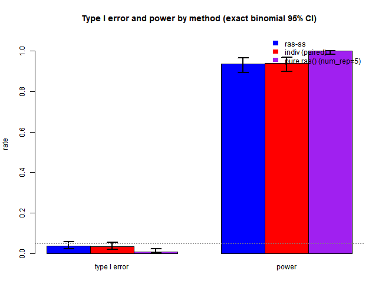
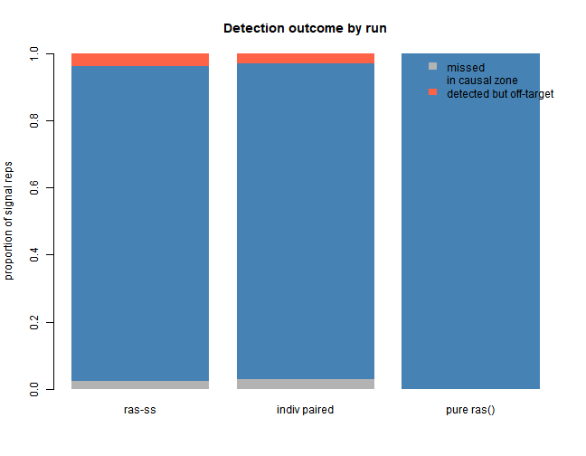
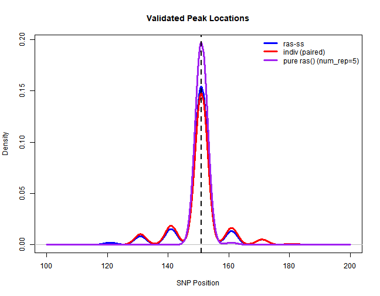

Paired-data validation on the 300-SNP toy. The main paper-style study is Paper Replication.
Show code
knitr::opts_chunk$set(echo = TRUE)
knitr::opts_chunk$set(autodep = TRUE)
library(rasSS)
library(mvtnorm)
library(RAS)
library(future.apply)
plan(multisession)
source("code/ras_ss.R")
start_time <- Sys.time()Show code
# run config
n_snps <- 300
n_disc <- 1000 # discovery cohort, method A (small for speed)
n_targ <- 1000 # target cohort (small for speed)
rho <- 0.8 # AR(1) correlation for LD
skip1 <- 10
skip2 <- 3
min_window_size <- 3
max_window_size <- 30
prune_r2 <- 0.2 # LD pruning
causal_snps <- c(150, 151, 152)
effect_size <- 0.5
slope_thresh <- 1e-3
davies_thresh <- 1e-3
base_seed <- 35
best_ws <- 12 # chosen via the window-size sweep in 01_simulation
R_true <- outer(1:n_snps, 1:n_snps, function(i, j) rho^abs(i - j))
set.seed(base_seed)
X_ref <- sim_genotypes(10000, R_true)
R_emp <- cor(X_ref)
prune_filter <- prune_ld(R_emp, prune_r2)
cat("Surviving SNPs after LD pruning:", sum(prune_filter), "of", n_snps, "\n")
null_beta <- rep(0, n_snps)
signal_beta <- rep(0, n_snps)
signal_beta[causal_snps] <- effect_size
# did the validated peak land on the causal cluster (for power calculation)
in_zone <- function(tau) any(tau >= 130 & tau <= 170)Show code
# rows 1 & 2 share the same simulated data per rep (paired test);
# row 3 runs the pure ras() function with num_rep = 5 (true published default)
n_null <- 500
n_power <- 200
# rows 1 & 2: paired, same simulated data per rep
paired_null <- future_lapply(seq_len(n_null), function(s) suppressWarnings({
r <- one_rep(null_beta, seed = 100000 + s)
ind <- indiv_scan(r$scan, r$X_t, r$y_t, r$b_disc)
c(ss = length(detect_peaks(r$scan, best_ws, scw = 8)$val$tau_hats) > 0,
ind = length(detect_peaks(list(x = r$scan$x, y = ind), best_ws, scw = 8)$val$tau_hats) > 0)
}))
# for signal reps, also save profiles / tau positions for diag
paired_pow <- future_lapply(seq_len(n_power), function(s) suppressWarnings({
r <- one_rep(signal_beta, seed = 200000 + s)
ind <- indiv_scan(r$scan, r$X_t, r$y_t, r$b_disc)
ss_tau <- detect_peaks(r$scan, best_ws, scw = 8)$val$tau_hats
ind_tau <- detect_peaks(list(x = r$scan$x, y = ind), best_ws, scw = 8)$val$tau_hats
list(ss_zone = in_zone(ss_tau),
ind_zone = in_zone(ind_tau),
ss_tau = ss_tau,
ind_tau = ind_tau,
scan = r$scan,
ind_prof = ind)
}))
ss_n <- sapply(paired_null, `[`, "ss"); ind_n <- sapply(paired_null, `[`, "ind")
ss_p <- sapply(paired_pow, function(x) x$ss_zone);
ind_p <- sapply(paired_pow, function(x) x$ind_zone)
# run 3: pure ras() with num_rep = 5 (closest to original)
pure_n <- unlist(future_lapply(seq_len(n_null), function(s)
suppressWarnings(length(detect_peaks(native_run_via_ras(null_beta, 500000 + s),
best_ws, scw = 8)$val$tau_hats) > 0)))
pure_p_tau <- future_lapply(seq_len(n_power), function(s)
suppressWarnings(detect_peaks(native_run_via_ras(signal_beta, 600000 + s),
best_ws, scw = 8)$val$tau_hats))
pure_p <- sapply(pure_p_tau, in_zone)Show code
# per-rep runtime, single core, same reps for all three (fair algorithmic cost)
nb <- 10
bench <- function(f) mean(sapply(1:nb, function(s) system.time(f(s))["elapsed"]))
t_ras_ss <- bench(function(s) {
r <- one_rep(signal_beta, 900000 + s)
invisible(detect_peaks(r$scan, best_ws, scw = 8))
})
t_ind <- bench(function(s) {
r <- one_rep(signal_beta, 910000 + s)
invisible(detect_peaks(list(x = r$scan$x,
y = indiv_scan(r$scan, r$X_t, r$y_t, r$b_disc)),
best_ws, scw = 8))
})
t_pure_b <- bench(function(s) {
invisible(detect_peaks(native_run_via_ras(signal_beta, 920000 + s), best_ws, scw = 8))
})Show code
# format for table
fmt <- function(k, n) {
b <- binom.test(sum(k), n)$conf.int
sprintf("%.3f (%.3f-%.3f)", mean(k), b[1], b[2])
}
knitr::kable(data.frame(
row = c("ras-ss", "indiv (same data, paired)", "indiv (pure ras(), num_rep=5)"),
type1 = c(fmt(ss_n, n_null), fmt(ind_n, n_null), fmt(pure_n, n_null)),
power = c(fmt(ss_p, n_power), fmt(ind_p, n_power), fmt(pure_p, n_power)),
time = sprintf("%.2f s/rep", c(t_ras_ss, t_ind, t_pure_b)),
reps = c(paste0(n_null, " / ", n_power),
paste0(n_null, " / ", n_power),
paste0(n_null, " / ", n_power))
), caption = "Method comparison -- point estimate (exact binomial 95% CI), single-core sec/rep")| row | type1 | power | time | reps |
|---|---|---|---|---|
| ras-ss | 0.038 (0.023-0.059) | 0.935 (0.891-0.965) | 1.43 s/rep | 500 / 200 |
| indiv (same data, paired) | 0.036 (0.021-0.056) | 0.940 (0.898-0.969) | 2.11 s/rep | 500 / 200 |
| indiv (pure ras(), num_rep=5) | 0.010 (0.003-0.023) | 1.000 (0.982-1.000) | 4.14 s/rep | 500 / 200 |
Show code
## ras-ss repro check: type1 = 0.038 (expect 0.038), power = 0.935 (expect 0.935)Show code
# NOTE: time with knitr caching
cat(sprintf("Total knitting time: %.1f minutes\n",
as.numeric(difftime(Sys.time(), start_time, units = "mins"))))## Total knitting time: 47.0 minutesShow code
# plot 0: the three-run comparison, w/ exact binomial 95% CI error bars
t1_counts <- c(sum(ss_n), sum(ind_n), sum(pure_n))
pw_counts <- c(sum(ss_p), sum(ind_p), sum(pure_p))
t1_ci <- sapply(t1_counts, function(k) binom.test(k, n_null)$conf.int)
pw_ci <- sapply(pw_counts, function(k) binom.test(k, n_power)$conf.int)
heights <- cbind(`type I error` = t1_counts / n_null,
power = pw_counts / n_power)
rownames(heights) <- c("ras-ss", "indiv (paired)", "pure ras()")
lo_mat <- cbind(`type I error` = t1_ci[1, ], power = pw_ci[1, ])
hi_mat <- cbind(`type I error` = t1_ci[2, ], power = pw_ci[2, ])
bp <- barplot(heights, beside = TRUE, col = c("blue", "red", "purple"),
ylim = c(0, 1.08), ylab = "rate",
main = "Type I error and power by method (exact binomial 95% CI)")
for (i in 1:3) for (j in 1:2) {
segments(bp[i, j], lo_mat[i, j], bp[i, j], hi_mat[i, j], lwd = 2)
segments(bp[i, j] - 0.12, lo_mat[i, j], bp[i, j] + 0.12, lo_mat[i, j], lwd = 2)
segments(bp[i, j] - 0.12, hi_mat[i, j], bp[i, j] + 0.12, hi_mat[i, j], lwd = 2)
}
abline(h = 0.05, lty = 3, col = "gray50")
legend("topright", fill = c("blue", "red", "purple"), border = NA, bty = "n",
legend = c("ras-ss", "indiv (paired)", "pure ras() (num_rep=5)"))
plot of chunk diagnostics
Show code
# plot 1: detection outcome per run
outcome <- function(tau_list) {
miss <- sapply(tau_list, function(t) length(t) == 0)
inz <- sapply(tau_list, in_zone)
c(missed = mean(miss), in_zone = mean(inz), off_target = mean(!miss & !inz))
}
o <- rbind(`ras-ss` = outcome(lapply(paired_pow, function(x) x$ss_tau)),
`indiv paired` = outcome(lapply(paired_pow, function(x) x$ind_tau)),
`pure ras()` = outcome(pure_p_tau))
barplot(t(o), col = c("grey70", "steelblue", "tomato"), border = NA,
ylab = "proportion of signal reps", main = "Detection outcome by run",
ylim = c(0, 1))
legend("topright", fill = c("grey70", "steelblue", "tomato"), border = NA,
legend = c("missed", "in causal zone", "detected but off-target"), bty = "n")
plot of chunk diagnostics
Show code
# plot 2: where the validated peak landed, all three runs
ss_taus <- unlist(lapply(paired_pow, function(x) x$ss_tau))
ind_taus <- unlist(lapply(paired_pow, function(x) x$ind_tau))
pure_taus <- unlist(pure_p_tau)
bw_use <- 2 # shared
d_ss <- density(ss_taus, bw = bw_use, from = 100, to = 200)
d_ind <- density(ind_taus, bw = bw_use, from = 100, to = 200)
d_pure <- density(pure_taus, bw = bw_use, from = 100, to = 200)
plot(d_ss, col = "blue", lwd = 3, ylim = c(0, max(d_ss$y, d_ind$y, d_pure$y)),
main = "Validated Peak Locations", xlab = "SNP Position")
lines(d_ind, col = "red", lwd = 3)
lines(d_pure, col = "purple", lwd = 3)
abline(v = 151, lty = 2, lwd = 2)
legend("topright", c("ras-ss", "indiv (paired)", "pure ras() (num_rep=5)"),
col = c("blue", "red", "purple"), lwd = 3, bty = "n")
plot of chunk diagnostics